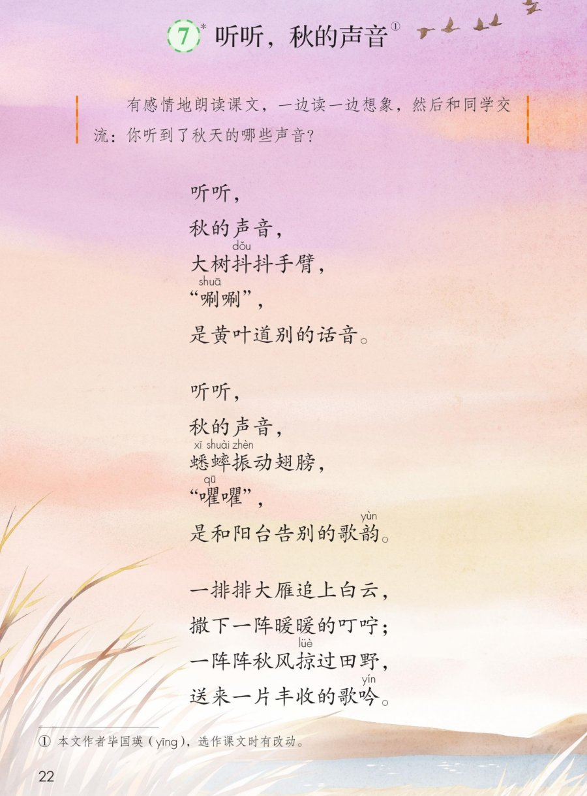
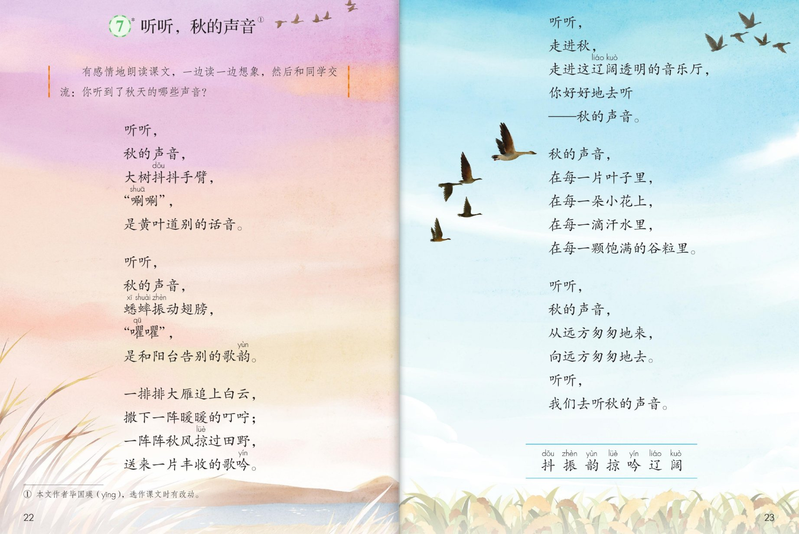

×
🔊 手机听不到声音怎么办？
① 先把手机
媒体音量调大 ，确认没开静音、没连蓝牙耳机；在微信里打开的，点右上角「⋯ → 用浏览器打开」。
② 还是没声音？到应用商店免费下载
Microsoft Edge 浏览器 （它自带朗读发声），用它打开本页面就能出声。
③ 换了 Edge 仍然没声音，说明这部手机的
硬件/系统不支持 网页朗读（多为老旧机型）；近几年买的新手机一般都能正常播放。
→ 打开声音自检
🍂 第 7 课《听听，秋的声音》· 有声图文带读（略读课）
统编版语文 · 第二单元·阅读 · 课本 P22~23 · 作者：毕国瑛 · 素养升级版（对标 2022 课标第二学段）
课文 6 节 30 行
素养目标 4
会认字 7
听写词 12
近义词 4 组
深入理解 8 题
本课本领 边读边想象·听秋声
🎧 略读课这样学（可随时点任意一行、一个字、一个词单独听）： ① 听读课文 ——一行一行读，读到哪一行哪一行发光；再试着自己默读 。② 学字词 ——7 个会认字，点一个读一个（略读课不列写字表，重在认读）。③ 词语·听写 ——听写 12 个课文词（读两遍→你写→报答案→听示范句），再听 4 组近义词辨析。④ 深入理解 ——8 道题（认知 / 理解 / 运用 / 拓展），先想后看。⑤ 分角色朗读 ——五位朗读员按节朗读，一边听一边想象画面。🌟 略读提示（教材原话）：有感情地朗读课文，一边读一边想象，然后和同学交流：你听到了秋天的哪些声音？
📌 本单元语文要素 ——阅读：运用多种方法理解难懂的词语 ；本课略读提示：有感情地朗读课文，一边读一边想象，然后和同学交流：你听到了秋天的哪些声音 。
🀄 文化自信
🀄 文化自信
诵读毕国瑛的散文诗，感受汉语的韵律美和人们惜秋爱秋的情怀。
🗣 语言运用
🗣 语言运用
认识 7 个生字；积累“叮咛、歌吟、辽阔”等词语和“在每一……”这样的句式。
💡 思维能力
💡 思维能力
一边读一边想象，把文字变成声音和画面，梳理课文写了哪些秋的声音。
🎨 审美创造
🎨 审美创造
有感情地朗读，在听读与想象中感受秋天声音的美，学着课文写一写。
点节前的 一二三 听整节
🔁 跟读模式：关
👁 隐藏注音（自测用）
字卡上的拼音标的是本课要认的字，读音来自课本生字表
🎤 朗读要求（老师标准） 有感情地朗读 ，读出对秋天的喜爱；一边读一边想象 画面，好像真的听到了那些声音；唰唰、㘗㘗 读得轻而短；交流 ：你听到了秋天的哪些声音。
🤫 默读小提示（略读课以默读为主） 听读 ——点一行听老师读，一边听一边想象画面；第二步 默读 ——不出声、不指读，想一想你听到了秋天的哪些声音；第三步 交流 ——把想象到的和同学说一说。
一
听听，
秋的声音，
大树抖抖手臂，
“唰唰”，
是黄叶道别的话音。
📌 这一段讲：第一节：黄叶唰唰，是黄叶向大树道别的话音。
二
听听，
秋的声音，
蟋蟀振动翅膀，
“㘗㘗”，
是和阳台告别的歌韵。
📌 这一段讲：第二节：蟋蟀㘗㘗，是和阳台告别的歌韵。
三
一排排大雁追上白云，
撒下一阵暖暖的叮咛；
一阵阵秋风掠过田野，
送来一片丰收的歌吟。
📌 这一段讲：第三节：大雁撒下叮咛，秋风送来丰收的歌吟。
四
听听，
走进秋，
走进这辽阔透明的音乐厅，
你好好地去听
——秋的声音。
📌 这一段讲：第四节：走进这辽阔透明的音乐厅，好好地去听秋的声音。
五
秋的声音，
在每一片叶子里，
在每一朵小花上，
在每一滴汗水里，
在每一颗饱满的谷粒里。
📌 这一段讲：第五节：秋的声音在叶子里、小花上、汗水里、谷粒里——到处都有。
六
听听，
秋的声音，
从远方匆匆地来，
向远方匆匆地去。
听听，
我们去听秋的声音。
📌 这一段讲：第六节：秋的声音匆匆地来、匆匆地去，我们一起去听。
🤔 想一想（点我可跳过）
点一张图，听读整页

第 22 页 · 课文（上）

第 23 页 · 课文（下）· 认读字
📖 人教版《语文》三年级上册 · 课本第 22、23 页 · 图片仅供个人学习，版权归人民教育出版社所有
📚 注释① 本文作者毕国瑛 ，选作课文时有改动。
点一个字，听读音、词语和在课文里的句子（略读课只要求认读）
点一行，听读这一组词语
抖 抖动 抖抖 发抖
振 振动 振翅 振作
掠 掠过 轻掠 掠影
匆 匆匆 匆忙 急匆匆
读两遍 → 你在纸上写 → 报答案 → 听示范句
准备听写 · 共 12 个词
○ ○ ○
点下面的「开始听写」，听到一个词就写一个词。
▶ 开始听写
🔁 再读一遍
👁 看答案
点词听读，点句子听示范句，再自己说一句
1 抖动 课文词
示范句：大树抖抖手臂，唰唰。
✏️ 我也能说：谁抖抖手臂。
2 振动 课文词
示范句：蟋蟀振动翅膀。
✏️ 我也能说：谁振动什么。
3 道别 课文词
示范句：是黄叶道别的话音。
✏️ 我也能说：谁的道别话音。
4 歌韵 课文词
示范句：是和阳台告别的歌韵。
✏️ 我也能说：谁的歌韵。
5 叮咛 课文词
示范句：撒下一阵暖暖的叮咛。
✏️ 我也能说：撒下什么。
6 掠过 课文词
示范句：一阵阵秋风掠过田野。
✏️ 我也能说：什么掠过哪里。
7 歌吟 课文词
示范句：送来一片丰收的歌吟。
✏️ 我也能说：送来什么。
8 辽阔 课文词
示范句：走进这辽阔透明的音乐厅。
✏️ 我也能说：走进什么样的音乐厅。
9 匆匆 课文词
示范句：秋的声音从远方匆匆地来。
✏️ 我也能说：什么匆匆地来。
10 饱满 课文词
示范句：在每一颗饱满的谷粒里。
✏️ 我也能说：什么样的谷粒。
11 谷粒 课文词
示范句：在每一颗饱满的谷粒里。
✏️ 我也能说：在什么里。
12 音乐厅 课文词
示范句：走进这辽阔透明的音乐厅。
✏️ 我也能说：走进什么地方。
相同点 / 不一样在哪 / 各造一句
道别 — 告别
相同：都表示分开时说些话。
不一样：道别 偏重分手时打招呼；告别 用法更宽，还可以告别过去。
道别：是黄叶道别的话音。
叮咛 — 叮嘱
相同：都表示反复地嘱咐。
不一样：叮咛 更温和亲切；叮嘱 更郑重、带提醒的口气。
叮咛：撒下一阵暖暖的叮咛。
辽阔 — 广阔
相同：都表示宽广、大。
不一样：辽阔 多形容天空、大地；广阔 还可以形容前途、天地。
辽阔：走进这辽阔透明的音乐厅。
匆匆 — 急忙
相同：都表示急急忙忙。
不一样：匆匆 多作状语叠用（匆匆地来）；急忙 偏重心里着急。
匆匆：向远方匆匆地去。
叠词 一排排 一阵阵 一片片 一颗颗
拟声词 唰唰 㘗㘗 沙沙 哗哗
秋的声音 道别的话音 告别的歌韵 丰收的歌吟
在每一…… 在每一片叶子里 在每一朵小花上
点一张卡，听读这一条
这首散文诗里有不少新鲜的词：叮咛、歌吟、掠过、辽阔 。方法卡教你四招：看注释、拆字猜、联系上下文、想象画面。
📖 方法一·看注释
课文里的难懂词，先看教材有没有注释；没有注释的再看别的方法。
🔤 方法二·拆字猜
叮咛——都是口字旁，跟说话有关，就是反复地嘱咐；歌吟——吟是吟唱，歌吟就是像歌一样的吟咏。
🔗 方法三·联系上下文
掠过——联系“秋风”“田野”，猜出是轻轻擦过、很快拂过；辽阔——联系“音乐厅”，知道是宽广。
🌳 方法四·想象画面
大树抖抖手臂——想象树枝摇、黄叶落的画面，词句的意思就活起来了。
✨ 新鲜句式·排比
在每一片叶子里，在每一朵小花上……一组排比，读出秋的声音无处不在。
✏️ 圈画交流
画出你觉得新鲜的词句（叮咛、歌吟、辽阔……），和同桌说说你是怎么懂的。🌈 答案不唯一。
标「答案不唯一」的题，说得有道理都对
认知 略读提示让我们怎么读、做什么？看解析
🤔 想一想
解析：
有感情地朗读课文，一边读一边想象，然后和同学交流：你听到了秋天的哪些声音。
🌈 答案不唯一，说得有道理都对
认知 课文写了秋天的哪些声音？看解析
🤔 想一想
解析：
黄叶道别的唰唰、蟋蟀告别的㘗㘗、大雁暖暖的叮咛、秋风丰收的歌吟——都是秋的声音。
🌈 答案不唯一，说得有道理都对
理解 “大树抖抖手臂，唰唰”是什么意思？看解析
🤔 想一想
解析：
秋风一吹，树枝摇动、黄叶落下来——把大树当成人在抖手臂，这是拟人的写法。
🌈 答案不唯一，说得有道理都对
理解 “撒下一阵暖暖的叮咛”，大雁在叮嘱什么？看解析
🤔 想一想
解析：
大雁往南飞，好像在说：天气要变凉了，小动物们要做好过冬的准备——暖暖的叮咛是关心。🌈 答案不唯一，想象合理都对。
🌈 答案不唯一，说得有道理都对
理解 为什么说秋是“辽阔透明的音乐厅”？看解析
🤔 想一想
解析：
秋天天空高远、明净、透亮，田野里到处都有美妙的声音，就像一座又大又亮的音乐厅。
🌈 答案不唯一，说得有道理都对
运用 你还听到过秋天的哪些声音？学着课文的样子说一说。看解析
🤔 想一想
解析：
示范：听听，秋的声音，苹果绽开笑脸，砰砰，是果树报喜的歌吟。🌈 答案不唯一。
🌈 答案不唯一，说得有道理都对
运用 用“在每一……里，在每一……上”说一句话。看解析
🤔 想一想
解析：
示范：秋的味道，在每一颗果实里，在每一片稻田上。🌈 答案不唯一。
🌈 答案不唯一，说得有道理都对
拓展 课文最后说“我们去听秋的声音”，你打算怎么去听？看解析
🤔 想一想
解析：
走到大自然里去：踩一踩落叶、听一听虫鸣、闻一闻桂花香，用心感受就是最好的听法。🌈 答案不唯一。
🌈 答案不唯一，说得有道理都对
💬 想象支架：先 黄叶道别 → 再 蟋蟀告别 → 接着 大雁叮咛、秋风歌吟 → 然后 走进辽阔音乐厅 → 最后 处处有秋声，我们一起去听。
点一个朗读员，听他读这一节
🎭 朗读员·第一节
听听，秋的声音，大树抖抖手臂，唰唰，是黄叶道别的话音。
💬 要一边听一边想象 ：黄叶道别、蟋蟀告别、大雁叮咛、秋风歌吟
🎭 朗读员·第二节
听听，秋的声音，蟋蟀振动翅膀，㘗㘗，是和阳台告别的歌韵。
💬 要一边听一边想象 ：黄叶道别、蟋蟀告别、大雁叮咛、秋风歌吟
🎭 朗读员·第三节
一排排大雁追上白云，撒下一阵暖暖的叮咛；一阵阵秋风掠过田野，送来一片丰收的歌吟。
💬 要一边听一边想象 ：黄叶道别、蟋蟀告别、大雁叮咛、秋风歌吟
🎭 朗读员·第四五节
听听，走进秋，走进这辽阔透明的音乐厅，你好好地去听——秋的声音。 / 秋的声音，在每一片叶子里，在每一朵小花上，在每一滴汗水里，在每一颗饱满的谷粒里。
💬 要一边听一边想象 ：黄叶道别、蟋蟀告别、大雁叮咛、秋风歌吟
🎭 朗读员·第六节
听听，秋的声音，从远方匆匆地来，向远方匆匆地去。听听，我们去听秋的声音。
💬 要一边听一边想象 ：黄叶道别、蟋蟀告别、大雁叮咛、秋风歌吟
每题给自己打 1~3 颗星
1. 我能正确认读本课 7 个会认字。 ☆ ☆ ☆
2. 我能默读课文，不出声、不指读。 ☆ ☆ ☆
3. 我能用方法理解叮咛、歌吟等难懂的词语。 ☆ ☆ ☆
4. 我能一边读一边想象，说出听到的秋的声音。 ☆ ☆ ☆
5. 我能有感情地朗读，读出秋天的美。 ☆ ☆ ☆
✍️ 小练笔 ：用几行小诗 写一写你听到的秋天的声音。例 ：听听，秋的声音，石榴张开嘴巴，噼啪 ，是果子报喜的话音。抄进今天的日记 ——下一课我们正好学写日记。